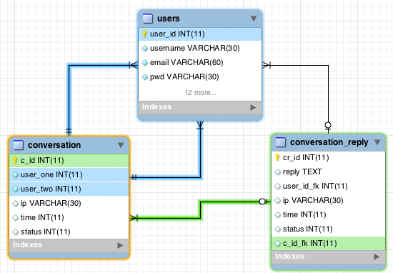
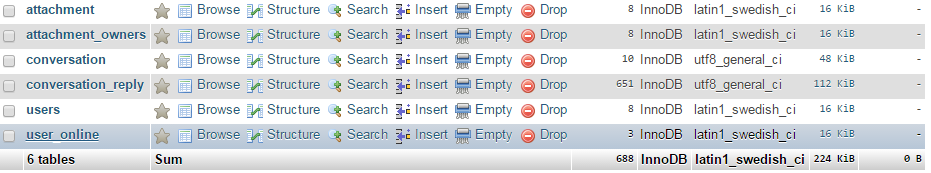

WhatsApp clone in html5,css3,php and Websocket
About HTML5 WebSocket
The HTML5 WebSockets specification defines an API that enables web pages to use the WebSockets protocol for two-way communication with a remote host. It introduces the WebSocket interface and defines a full-duplex communication channel that operates through a single socket over the Web. HTML5 WebSockets provide an enormous reduction in unnecessary network traffic and latency compared to the unscalable polling and long-polling solutions that were used to simulate a full-duplex connection by maintaining two connections.
Read more from here
Dorochat is a web application built on bootstrap which makes this app fully Responsive and compatible with all latest major browsers, the coming of html5 relieved pain caused by ajax polling, if you're developer i believe you understand how it sucks when the webpage is requesting update for every X seconds from the server, you understand how server load is, you understand that the more your application get popularity the more unnecessary request sent to your server. at the end of the day the server will crash. the fact is we could not tolerate a guy who said that Ajax is better in realtime application. that's why we come up with Realtime web apps to show clearly how to use ajax without hammering the server and network ressources and demonstrate how Websocket works
Dorochat allow users to send text, stickers, media files, and interactive messages. Update interactive messages, adjusting the state of each message as the conversation’s participants interact with it.
I will give you a simple example, assume you have 100,000 Users active on your website, and its so happen that 80,000 users are busy chatting what will happen to the server if your ajax is requesting new message for every 2 secs, actually page become unresponsive(server is not responding) you can yourself see that that server is receiving 80,000 request every two seconds, that's too much my friends
Ajax call every two seconds
// <Ajax call every two seconds"/>
<script type="text/javascript">
function executeQuery() {
$.ajax({
url: 'newMessages.php',
success: function(data) {
// do something with the return value here if you like
}
});
setTimeout(executeQuery, 2000); // call this function every two seconds
}
$(document).ready(function() {
//When the document is ready after two second call the function
setTimeout(executeQuery, 2000);
});
</script>
What this will do to your server if your website has many users is untold story, but again ajax is good if your application doesn't require to update after a certain interval or when you're not dealing with chatting or private messaging like Gmail, whatsApp or Facebook.
Why Web Socket!
Unlike ajax, websocket doesn't have to send unnecessary request to the server,instead when a client is connect to the port a connection is established. through this connection server can push data to the client without client requesting them. you can Read more from here. The same applies to the client actually the connection is bidirectional
WebSockets isn't intended to replace AJAX and is not strictly even a replacement for Comet/long-poll (although there are many cases where this makes sense). The purpose of WebSockets is to provide a low-latency, bi-directional, full-duplex and long-running connection between a browser and server. WebSockets opens up new application domains to browser applications that were not really possible using HTTP and AJAX (interactive games, dynamic media streams, bridging to existing network protocols, etc).
However, there is certainly an overlap in purpose between WebSockets and AJAX/Comet. For example, when the browser wants to be notified of server events (i.e. push) then Comet techniques and WebSockets are certainly both viable options. If your application needs low-latency push events then this would be a factor in favor of WebSockets. On the other hand, if you need to co-exist with existing frameworks and deployed technologies (OAuth, RESTful APIs, proxies, load balancers) then this would be a factor in favor of Comet techniques (for now).
On the other hand, if you are creating a new application that just doesn't work well within the latency and connection constraints of HTTP/Ajax/Comet, then consider using WebSockets.
Also, some answers indicate that one of the downsides of WebSockets is limited/mixed server and browser support. Let me just diffuse that a bit. While iOS (iPhone, iPad) still supports the older protocol (Hixie) most WebSockets servers support both Hixie and the HyBi/IETF 6455 version. Most other platforms (if they don't already have built-in support) can get WebSockets support via web-socket-js (Flash based polyfill). This covers the vast majority of web users. Also, if you are using Node for the server backend, then consider using Socket.IO which includes web-socket-js as a fallback and if even that is not available (or disabled) then it will fall back to using whatever Comet technique is available for the given browser.
Websocket can support thousands of connections at ago.
Dorochat system design and Documentation
Why it matters
If you want to create realtime messaging application, supporting thousands connections, or push notification to the clients. You need to understand how dorochat works to optimize your strategy.
Database design is following this scenario
 create table attachement
CREATE TABLE IF NOT EXISTS `attachment` (
`id` int(120) NOT NULL,
`image_name` varchar(230) NOT NULL,
`date` varchar(23) NOT NULL
) ENGINE=InnoDB DEFAULT CHARSET=latin1;
create table attachement Owner(To identify who sends photo or video in chat)
CREATE TABLE IF NOT EXISTS `attachment_owners` (
`id` int(120) NOT NULL,
`user_id` int(120) NOT NULL,
`attach_id` int(11) NOT NULL,
`c_id` int(120) NOT NULL,
`date` varchar(23) NOT NULL
) ENGINE=InnoDB DEFAULT CHARSET=latin1;
create table conversation
CREATE TABLE IF NOT EXISTS `conversation` (
`coID` int(11) NOT NULL,
`coUserOne` int(11) NOT NULL,
`coUserTwo` int(11) NOT NULL,
`coIP` varchar(30) DEFAULT NULL,
`blocked` int(2) NOT NULL,
`blockedBy` int(2) NOT NULL,
`coTime` datetime DEFAULT NULL
) ENGINE=InnoDB AUTO_INCREMENT=24 DEFAULT CHARSET=utf8;
create table conversation_reply
CREATE TABLE IF NOT EXISTS `conversation_reply` (
`crID` int(11) NOT NULL,
`crReply` text,
`crUserFK` int(11) NOT NULL,
`crIP` varchar(30) NOT NULL,
`crTime` datetime NOT NULL,
`crConFK` int(11) NOT NULL,
`attachment` int(2) NOT NULL,
`user_one_read` int(2) NOT NULL,
`user_two_read` int(2) NOT NULL
) ENGINE=InnoDB AUTO_INCREMENT=652 DEFAULT CHARSET=utf8;
create table Users
CREATE TABLE IF NOT EXISTS `users` (
`uID` int(11) NOT NULL,
`firstname` varchar(100) NOT NULL,
`Lastname` varchar(50) DEFAULT NULL,
`email` varchar(60) NOT NULL,
`password` varchar(64) NOT NULL,
`profile` varchar(120) NOT NULL,
`joined` datetime NOT NULL
) ENGINE=InnoDB AUTO_INCREMENT=9 DEFAULT CHARSET=latin1;
create table Online users
CREATE TABLE IF NOT EXISTS `user_online` (
`id` int(12) NOT NULL,
`session` char(100) NOT NULL DEFAULT '',
`userId` int(5) NOT NULL,
`status` varchar(12) NOT NULL,
`time` int(11) NOT NULL DEFAULT '0'
) ENGINE=InnoDB AUTO_INCREMENT=13 DEFAULT CHARSET=latin1;
Sql query to get all conversation List
select c.coID, c.blocked, c.blockedBy, u.uID, u.firstname, u.Lastname, u.profile, m.crReply, m.crTime, m.crConFK
FROM users u, conversation c, conversation_reply m
LEFT JOIN conversation_reply m2
ON (m.crConFK = m2.crConFK AND m.crID < m2.crID) -- this is to select last message
WHERE
CASE
WHEN c.coUserOne = $user_id
THEN c.coUserTwo = u.uID
WHEN c.coUserTwo = $user_id
THEN c.coUserOne= u.uID
END
AND
c.coID = m.crConFK
AND
(c.coUserOne = $user_id OR c.coUserTwo = $user_id)
AND
m2.crID IS NULL ORDER BY m.crID DESC
//Where $user_id==Logged in User for our case lets say 1
Result

Sql query to get all conversation reply
SELECT * FROM (SELECT R.crID,R.crTime,R.crReply,R.attachment,R.crUserFK,R.crConFK,R.user_one_read,R.user_two_read,U.uID,U.firstname,U.lastname,U.profile FROM users U, conversation_reply R WHERE R.crUserFK=U.uID and R.crConFK='$conversation_id' ORDER BY crID DESC LIMIT 0,6 )sub ORDER BY crID ASC